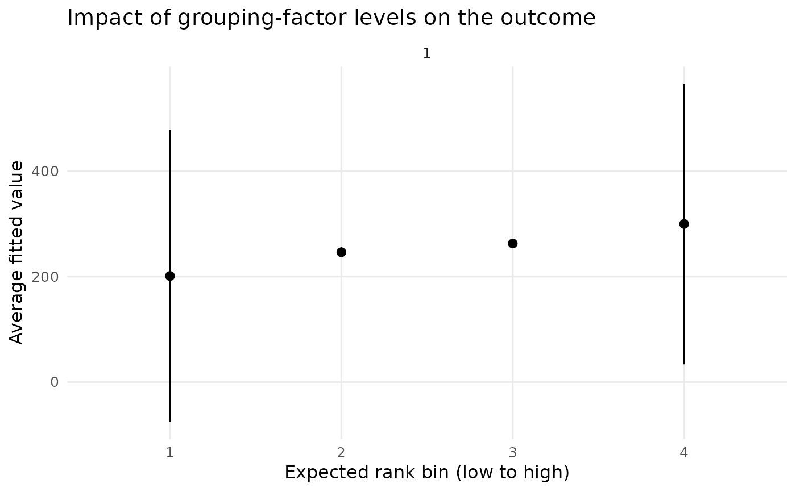
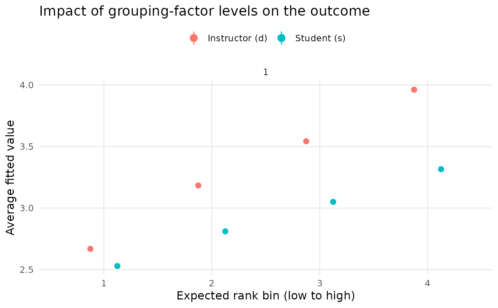

Plot the output of one or more REimpact calls on a
single chart. Each point is the weighted-average fitted value for a bin of
the expected-rank distribution of a grouping factor, with a confidence
interval derived from the weighted standard error. Supplying a named list of
REimpact results overlays them on the same axes – for example to
compare the influence of two different grouping factors, or the same factor
across two models – which previously required hand-assembling the data
frames (#84).
Arguments
- data
either a single data.frame produced by
REimpact, or a named list of such data.frames. When a named list is supplied the names are used to colour and label the series.- level
the width of the confidence interval (default 0.95).
- facet
logical, facet the plot by
case(defaultTRUE).- point_size
numeric size of the plotted central points.
Examples
# \donttest{
m1 <- lmer(Reaction ~ Days + (1 | Subject), sleepstudy)
imp <- REimpact(m1, newdata = sleepstudy[1, ], groupFctr = "Subject",
breaks = 4)
plotREimpact(imp)

# Compare two grouping factors on the same chart
g1 <- lmer(y ~ lectage + studage + (1 | d) + (1 | s), data = InstEval)
d_eff <- REimpact(g1, newdata = InstEval[1, ], groupFctr = "d", breaks = 4)
s_eff <- REimpact(g1, newdata = InstEval[1, ], groupFctr = "s", breaks = 4)
plotREimpact(list("Instructor (d)" = d_eff, "Student (s)" = s_eff))

# }